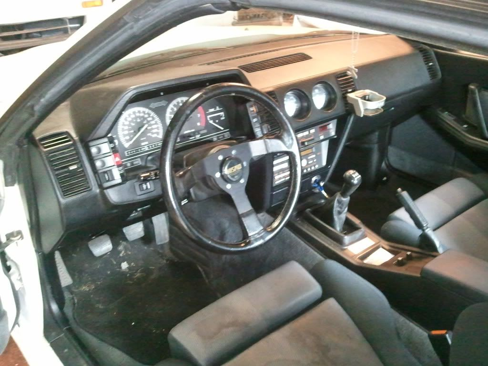
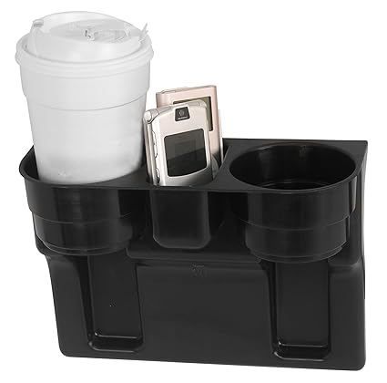
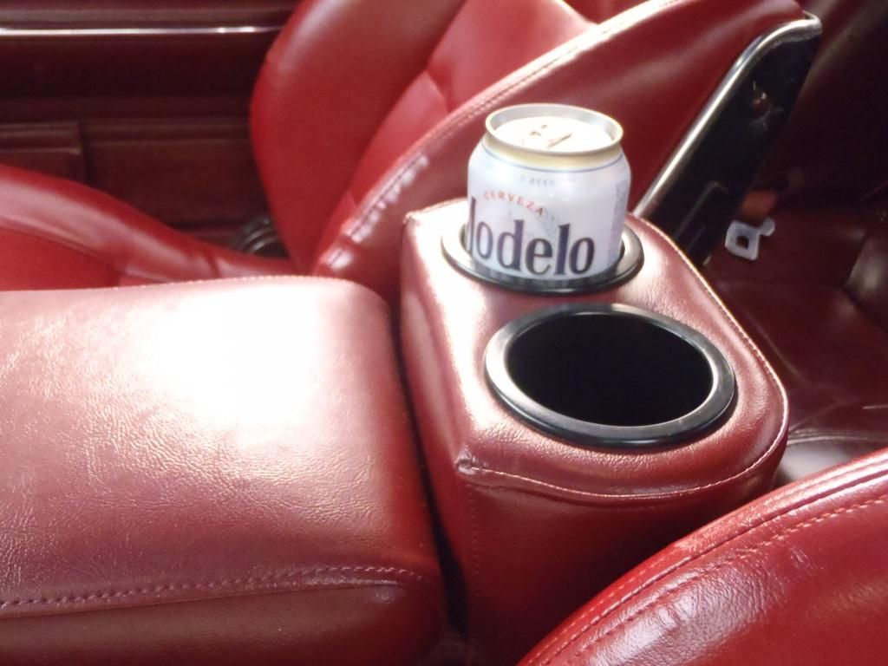
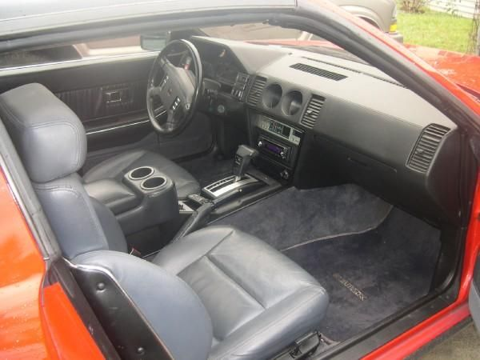

-
After searching I noticed there wasn't a thread on this. I know some don't care about cup holders nor believe they belong in a Z…because race car. However those of us that do I'm sure would appreciate input, pictures, etc. of cup holder setups. For example I've heard of problems with the plug and chug inserts. Does anyone have pictures that show why it doesn't fit well? I personally have not seen good clear images of one installed in a Z31.私♥フェアレディ・ゼット
・1984 300zx N/A -
They work just fine if you only drink out of soda cans.
Anything larger, they tip on turns.
-
Hooks into the dash vents. I found it in a parts car years ago and have been transferring it from car to car.

1988 300ZX Turbo, Shiro Special #760
1988 300ZX Turbo Automatic (wife's car)
1991 Hard-body 2WD
http://zccw.org/zccw/?page_id=1215 -
Thanks! this was the kind of stuff I was looking for. Amreboot, would it be possible to see a picture with a soda can in the cup holder? Just curious on the depth and width.私♥フェアレディ・ゼット
・1984 300zx N/A -
I use one of these ..
 -
-
I believe that is the older version of the plug-n-chug. I have the newer version and they changed the depth of the cup holders. Much lower now! Check it out:


I love my plug-n-chug armrest/cup holder! Do yourself a favor and get one. Very comfortable padded armrest, and the convenience of the cup holders.
http://www.thezstore.com/page/TZS/CTGY/classic08e06
-
Same MSA cup holder in my old 2+2 Turbo with the hinge reversed

1988 300ZX Turbo, Shiro Special #760
1988 300ZX Turbo Automatic (wife's car)
1991 Hard-body 2WD
http://zccw.org/zccw/?page_id=1215 -
The newer versions are great! The older ones were way too shallow -- anything bigger than a half full can would fly out on anything more than neighborhood driving.1985 NA2T(now RB) * 1988 SS x2 * 1984 AE x3 * 2006 350Z

-
There was somebody on here who made a removable wooden insert for the console storage compartment with holes cut out for cups. Pretty neat idea. I can't find the posts through searching, though.Zoey - 1987 Z31T GLL - HKS EVC / CM SS 3" turbo-back / Stance GR+
Black Betty - 2014 Audi C7 S6 APR1 -
Thanks everybody, these are great. I'm definitely wanting one of these now. Seems like it would hold bottles pretty well too. Depending on the bottles of course.私♥フェアレディ・ゼット
・1984 300zx N/A -
Just curious, but the MSA cupholders. Do they have their own little box in place of the center console, or do they have a bottom, and make the center console unusable?__________________________________________________ ___________________
"Aim towards the Enemy." -- Instruction printed on US Rocket Launcher
86 N/A:Rebuilt Autotragic, Cat Delete, PRW-2, Poly Bushings, MSA sway bars, Pioneer HU and Speakers, Sleepy Eyes
Current 0-60: 10.0 flat =[ -
They don't have a bottom in them
1988 300ZX Turbo, Shiro Special #760
1988 300ZX Turbo Automatic (wife's car)
1991 Hard-body 2WD
http://zccw.org/zccw/?page_id=1215 -
No it just replaces the center console lid, I looked at these but I had just redone my stock cover with nice matching leather and didn't want to the black. -


Copyright © 2006–. All rights reserved. Privacy Policy